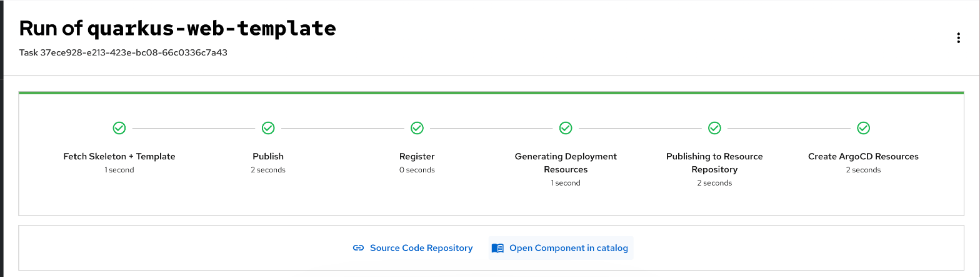
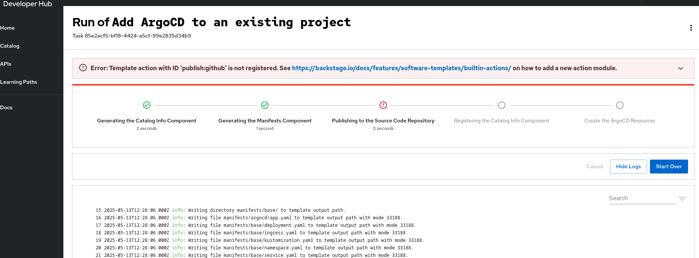

Streamline software development and management in Red Hat Developer Hub
Automating the development lifecycle, improving code quality, monitoring deployments, and managing services by using tools and plugins in Red Hat Developer Hub (RHDH)
Abstract
- 1. Import your team’s codebase from Git
- 2. Centralize your software components in the Red Hat Developer Hub catalog
- 2.1. Add new components to your Red Hat Developer Hub instance
- 2.2. Update existing components in your Red Hat Developer Hub catalog
- 2.3. Find components by Kind in the Red Hat Developer Hub catalog
- 2.4. Filter components by text in the Red Hat Developer Hub catalog
- 2.5. Review the YAML configuration of your Red Hat Developer Hub Software Catalog
- 2.6. Star key components in the Software Catalog
- 3. Import and use an existing Software Template for faster development
As a developer, you can use the platform integrated tools and services to create component catalogs, enforce code standards, manage security, and automate the software development and management workflow in Red Hat Developer Hub (RHDH).
1. Import your team’s codebase from Git
Red Hat Developer Hub can automate GitHub repositories onboarding and track their import status.
These features are for Technology Preview only. Technology Preview features are not supported with Red Hat production service level agreements (SLAs), might not be functionally complete, and Red Hat does not recommend using them for production. These features provide early access to upcoming product features, enabling customers to test functionality and provide feedback during the development process.
For more information on Red Hat Technology Preview features, see Technology Preview Features Scope.
1.1. Enable and authorize Bulk Import capabilities in Red Hat Developer Hub
Enable Bulk Import plugins and configure RBAC permissions to allow users to import multiple GitHub repositories and GitLab projects into the catalog.
Prerequisites
- For GitHub only: You have enabled GitHub repository discovery.
Procedure
The Bulk Import plugins are installed but disabled by default. To enable the
./dynamic-plugins/dist/red-hat-developer-hub-backstage-plugin-bulk-import-backend-dynamicand./dynamic-plugins/dist/red-hat-developer-hub-backstage-plugin-bulk-importplugins, edit yourdynamic-plugins.yamlwith the following content:plugins: - package: ./dynamic-plugins/dist/red-hat-developer-hub-backstage-plugin-bulk-import-backend-dynamic disabled: false - package: ./dynamic-plugins/dist/red-hat-developer-hub-backstage-plugin-bulk-import disabled: falseSee Installing and viewing plugins in Red Hat Developer Hub.
Configure the required
bulk.importRBAC permission for the users who are not administrators as shown in the following code:rbac-policy.csvfragmentp, role:default/bulk-import, bulk.import, use, allow g, user:default/<your_user>, role:default/bulk-importNote that only Developer Hub administrators or users with the
bulk.importpermission can use the Bulk Import feature. See Permission policies in Red Hat Developer Hub.
Verification
- The sidebar displays a Bulk Import option.
- The Bulk Import page shows a list of added GitHub repositories and GitLab projects.
1.2. Import multiple GitHub repositories
Select and import multiple GitHub repositories to the Red Hat Developer Hub catalog, automatically creating pull requests with required catalog-info.yaml files.
Prerequisites
Procedure
- Click Bulk Import in Developer Hub left sidebar.
- If your RHDH instance has multiple source control tools configured, select GitHub from the Source control tool list.
Select the repositories to import, and validate.
Developer Hub creates a pull request in each selected repository to add the required
catalog-info.yamlfile.- For each repository to import, click PR to review and merge the changes in GitHub.
Verification
- Click Bulk Import in Developer Hub left sidebar.
- Verify that each imported GitHub repository in the Selected repositories list has the status Waiting for approval or Imported.
-
For each Waiting for approval repository, click the pull request link to review and merge the
catalog-info.yamlfile in the corresponding repository.
1.3. Manage the added Git repositories
You can oversee and manage the Git repositories that are imported to Developer Hub.
Prerequisites
- You have imported GitHub repositories.
Procedure
Click Bulk Import in the left sidebar to display all the current GitHub repositories and GitLab projects that are being tracked as Import jobs, along with their status.
- Added
-
The Git repository is added to the Developer Hub catalog after the import pull request is merged or if the Git repository already contained a
catalog-info.yamlfile during the bulk import. It can take a few minutes for the entities to be available in the catalog. - Waiting for approval
-
There is an open pull request or merge request adding a
catalog-info.yamlfile to the GitHub repository or GitLab project. You can:
- Click pencil icon on the right to see details about the pull request or merge request. You can use the detailed view to edit the request content right from Developer Hub.
- Delete the Import job, this action closes the import pull request or merge request as well.
To move the Import job to the Added state, merge the import pull request or merge request from the Git repository.
- Empty
Developer Hub is unable to determine the import job status because the Git repository is imported from other sources but does not have a
catalog-info.yamlfile and lacks any import pull or merge request adding it.Note- After an import pull request or merge request is merged, the import status is marked as Added in the list of Added entities, but it might take a few seconds for the corresponding entities to appear in the Developer Hub Catalog.
A location added through other sources (for example, statically in an
app-config.yamlfile, dynamically when enabling GitHub discovery, or registered manually using the "Register an existing component" page) might show up in the Bulk Import list of Added Repositories if the following conditions are met:-
The location URL points to a
catalog-info.yamlfile at the root of the Git repository default branch. - For GitHub only: The target repository is accessible from the configured GitHub integrations.
-
The location URL points to a
1.4. Monitor Bulk Import actions using audit logs
Review Bulk Import backend plugin audit log events to monitor repository import operations, track API requests, and troubleshoot import issues.
Procedure
- Access your Developer Hub backend logs where audit log events are recorded.
Review the following Bulk Import audit log events to monitor repository operations:
BulkImportUnknownEndpoint- Tracks requests to unknown endpoints.
BulkImportPing-
Tracks
GETrequests to the/pingendpoint, which allows us to make sure the bulk import backend is up and running. BulkImportFindAllOrganizations-
Tracks
GETrequests to the/organizationsendpoint, which returns the list of organizations accessible from all configured GitHub Integrations. BulkImportFindRepositoriesByOrganization-
Tracks
GETrequests to the/organizations/:orgName/repositoriesendpoint, which returns the list of repositories for the specified organization (accessible from any of the configured GitHub Integrations). BulkImportFindAllRepositories-
Tracks GET requests to the
/repositoriesendpoint, which returns the list of repositories accessible from all configured GitHub Integrations. BulkImportFindAllImports-
Tracks
GETrequests to the/importsendpoint, which returns the list of existing import jobs along with their statuses. BulkImportCreateImportJobs-
Tracks
POSTrequests to the/importsendpoint, which allows to submit requests to bulk-import one or many repositories into the Developer Hub catalog, by eventually creating import pull requests in the target repositories. BulkImportFindImportStatusByRepo-
Tracks
GETrequests to the/import/by-repoendpoint, which fetches details about the import job for the specified repository. BulkImportDeleteImportByRepoTracks
DELETErequests to the/import/by-repoendpoint, which deletes any existing import job for the specified repository, by closing any open import pull request that could have been created.Example audit log output:
{ "actor": { "actorId": "user:default/myuser", "hostname": "localhost", "ip": "::1", "userAgent": "Mozilla/5.0 (X11; Linux x86_64) AppleWebKit/537.36 (KHTML, like Gecko) Chrome/128.0.0.0 Safari/537.36" }, "eventName": "BulkImportFindAllOrganizations", "isAuditLog": true, "level": "info", "message": "'get /organizations' endpoint hit by user:default/myuser", "meta": {}, "plugin": "bulk-import", "request": { "body": {}, "method": "GET", "params": {}, "query": { "pagePerIntegration": "1", "sizePerIntegration": "5" }, "url": "/api/bulk-import/organizations?pagePerIntegration=1&sizePerIntegration=5" }, "response": { "status": 200 }, "service": "backstage", "stage": "completion", "status": "succeeded", "timestamp": "2024-08-26 16:41:02" }
2. Centralize your software components in the Red Hat Developer Hub catalog
The Red Hat Developer Hub Software Catalog is a centralized system that gives you visibility into all the software across your ecosystem, including services, websites, libraries, and data pipelines.
The metadata for the components in your Software Catalog is stored as YAML files that live alongside your code in your version control system. The version control repositories can include one or many metadata files. Software Catalog organizes items as entities, which include Components, Resources, and APIs, and other related types. Each entity includes associated metadata such as its owner, type, and other relevant details.
By storing metadata in YAML files alongside the code, you allow Red Hat Developer Hub to process and display this information through a clear, visual interface. With the Software Catalog, you can manage and maintain your software, stay aware of all software available in your ecosystem, and take ownership of your services and tools.
The Overview page for a component provides key information such as links to the source code, documentation, dependencies, and ownership details. You can customize this page with plugins to suit specific needs.
2.1. Add new components to your Red Hat Developer Hub instance
You can add new components to expand your Developer Hub Software Catalog by registering them manually, creating them from Software Templates, or using bulk import.
Prerequisites
- You have installed and configured the Red Hat Developer Hub instance.
-
If RBAC is enabled, you have a role with the following permissions:
catalog.entity.create,catalog.location.create,bulk.import.
Procedure
Add components to your RHDH instance using the following methods:
-
Register components manually using the GUI or by using your
app-config.yamlwith the required permissions. - Create new components by using Software Templates.
-
Register components manually using the GUI or by using your
- Use the bulk import plugin with the required permissions. For more information, see Bulk importing GitHub repositories.
2.1.1. Create new components in your Red Hat Developer Hub instance
You can create new components in the Software Catalog in your RHDH instance. Red Hat Developer Hub automatically registers all components that developers or platform engineers create using Templates in the Software Catalog.
Prerequisites
- You have installed and configured the Red Hat Developer Hub instance.
-
If RBAC is enabled, you have a role with the following permissions:
catalog.entity.create,scaffolder.template.parameter.read,scaffolder.template.step.read,scaffolder.task.create.
Procedure
- In your Red Hat Developer Hub navigation menu, click Catalog.
- On the Catalog page, click Self-service.
2.1.2. Register components manually in your RHDH instance
To manually register components in your RHDH instance, create a catalog-info.yaml file and register it with your Red Hat Developer Hub instance.
Prerequisites
- You have installed and configured the Red Hat Developer Hub instance.
-
If RBAC is enabled, you have a role with the following permissions:
catalog.entity.create,catalog.location.create.
Procedure
In the root directory of your software project, create a file named
catalog-info.yaml.apiVersion: backstage.io/v1alpha1 kind: Component metadata: name: _<your_software_component>_ description: _<software_component_brief_description>_ tags: - example - service annotations: github.com/project-slug: _<repo_link_of_your_component_to_register>_ spec: type: _<your_service>_ owner: _<your_team_name>_ lifecycle: _<your_lifecycle>_-
Commit the
catalog-info.yamlfile to the root of your project source code repository. - In your Red Hat Developer Hub navigation menu, go to Catalog > Self-service.
- On the Self-service page, click Register Existing Component.
-
On the Register an existing component page, enter the full URL of the
catalog-info.yamlfile in your repository. For example: Artist lookup component. - Complete the wizard instructions.
Verification
- Your software component is listed in the Software Catalog. You can view its details and ensure all the metadata is accurate.
2.2. Update existing components in your Red Hat Developer Hub catalog
You can update components in the Software Catalog in your Red Hat Developer Hub instance.
Prerequisites
- You have installed and configured the Red Hat Developer Hub instance.
-
If RBAC is enabled, you have a role with the following permission:
catalog.entity.refresh.
Procedure
- In your Red Hat Developer Hub navigation menu, click Catalog.
Find the software component that you want to edit, under Actions, click the Edit icon.
NoteThis action redirects you to the YAML file on GitHub.
On your remote repository UI, update your YAML file.
NoteAfter you merge your changes, the updated metadata in the Software Catalog is displayed after some time.
2.3. Find components by Kind in the Red Hat Developer Hub catalog
Filter the Software Catalog to display components by their type, such as Component, API, or Template.
Prerequisites
- You are logged in to the RHDH instance.
Procedure
- In your Red Hat Developer Hub navigation menu, click Catalog.
- On the Catalog page, click the Kind drop-down list.
Select the Kind you want to filter by, such as Component, API, or Template.
NoteThe available filter lists change based on the Kind you select, showing options relevant to that entity type.
Verification
- The Catalog updates to list only the components matching the selected Kind.
2.4. Filter components by text in the Red Hat Developer Hub catalog
Search and filter components by text in the Software Catalog to quickly locate specific services, libraries, or other entities.
Procedure
- In your Red Hat Developer Hub navigation menu, click Catalog.
- In the Search field, enter a component name, description, or keyword that you are looking for.
Verification
- The Catalog list updates to display only components matching your search criteria.
2.5. Review the YAML configuration of your Red Hat Developer Hub Software Catalog
You can view the Software Catalog YAML file in your Red Hat Developer Hub instance to review the metadata for the components in your Software Catalog.
Procedure
- In your Red Hat Developer Hub navigation menu, click Catalog.
Find the software component that you want to view, under Actions, click the View icon.
NoteThese steps redirect you to the YAML file on your remote repository.
2.6. Star key components in the Software Catalog
You can add commonly used components to the Your Starred Entities card for quick access.
Procedure
- In the Red Hat Developer Hub navigation menu, select Catalog.
- Locate the components you want to add as a favorite.
- In the Actions column for that component, click the Add to favorites (star) icon.
Verification
- Navigate to the Home page and verify that the Your Starred Entities card lists the component.
3. Import and use an existing Software Template for faster development
To standardize and accelerate the creation of new software, use Software Templates in Red Hat Developer Hub (RHDH).
Each template uses a YAML definition to present a functional interface for inputting project metadata. Software Templates run a sequential series of actions, such as scaffolding code or creating repositories, which you can configure to run conditionally based on user input.
3.1. Create a software component using Software Templates
To ensure project consistency and reduce manual configuration time, use Software Templates to create new components.
Prerequisites
- You log in to the Red Hat Developer Hub instance.
-
If RBAC is enabled, you have a role with the following permissions:
scaffolder.template.parameter.read,scaffolder.template.step.read,scaffolder.task.create.
Procedure
- On the Red Hat Developer Hub navigation menu, click Catalog > Self-service or in the Global Header, click Create (+).
- On the Self-service page, locate the Templates you want to use and click Choose to start the scaffolding process.
- Follow the wizard instructions to enter the required project details.
In the Review step, verify your parameters and click Create.
The scaffolding process begins. You can monitor the progress in the logs or click Cancel to stop the operation.
Verification
If the system creates the component successfully, a success page is displayed.

Troubleshooting
- If the creation process fails, you must review the logs on the error page for specific failure details.
To retry, click Start Over; the system keeps your earlier entered values on the Self-service page.

3.2. Search and filter Software Templates in your Red Hat Developer Hub instance
Search and filter the available Software Templates to quickly locate the correct configuration for your project.
Procedure
- In the Red Hat Developer Hub navigation menu, click Catalog > Self-service.
- In the Search field, enter the name for the Software Template.
- Optional: To refine the results, select a category from the Category list.
3.3. Import an existing Software Template
You can use the Catalog Processor to import an existing Software Template into your Red Hat Developer Hub instance.
Prerequisites
- You have created a directory or repository that has at least one template YAML file or have access to such a directory or repository.
- Optional: To use a template stored in GitHub, you have configured Developer Hub integration with GitHub.
Procedure
-
Open your RHDH
app-config.yamlconfiguration file. In the
catalog.rulessection, add a rule to allowTemplateskinds, as shown in the following example:# ... catalog: rules: - allow: [Template] locations: - type: url target: https://<repository_url/template-name>.yaml # ...where:
catalog.rules.allow-
Specify the
Templaterule to allow new Software Templates in the catalog. catalog.locations.type-
Specify the
urltype when importing templates from a repository (for example, GitHub or GitLab). catalog.locations.target- Specify the full URL to the template file.
Verification
- In the Red Hat Developer Hub navigation menu, click Catalog.
- From the Kind list, select Template.
- Verify that the Template list displays your template.
3.4. Additional resources
- About Red Hat Developer Hub
- Customizing Red Hat Developer Hub :context: streamline-software-development-and-management-in-rhdh